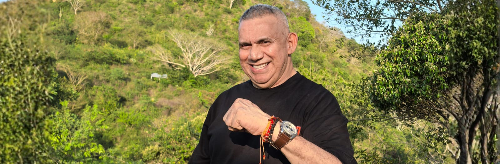
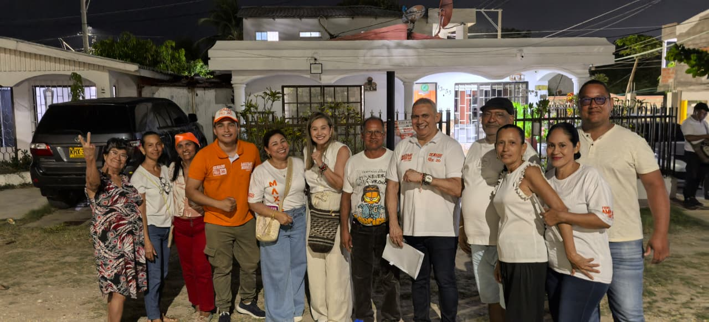

Liderazgo con Raíces
"Máximo Noriega: Un hombre del pueblo, para el pueblo. Líder social y político con raíces en el campo colombiano y una trayectoria marcada por el trabajo comunitario y la defensa de los derechos ciudadanos."
Su vida es testimonio de coherencia entre el decir y el hacer. Desde sus orígenes en Montería hasta su experiencia en el Senado, Máximo ha mantenido un compromiso inquebrantable con las comunidades más vulnerables de Colombia.
Conocer más
Trayectoria de Vida

Máximo Noriega Rodríguez es un líder social y político con una sólida trayectoria. Nació en Montería, pero desde muy joven se formó en Barranquilla, donde destacó como líder estudiantil y representante universitario. Es Contador Público y Magíster en Ciencias Políticas y Económicas de la Universidad del Norte.
Su carrera en el servicio público lo ha llevado a ser subsecretario de Educación, Concejal del Distrito y presidente del Concejo de Barranquilla. A nivel nacional, acompañó al presidente Gustavo Petro en la Alcaldía de Bogotá, asumiendo responsabilidades clave en seguridad, recreación y participación ciudadana.
La historia de Máximo nace en el corazón del campo colombiano y crece al calor de la lucha comunitaria. Desde su infancia en Montería, su liderazgo tomó forma en Barranquilla, guiado por la vocación de justicia social y el compromiso con las comunidades.
Agenda Legislativa para el Cambio
Basado en los principios que impulsa desde el Senado, estos son los ejes de su trabajo:
📚 Cambio Social
Impulsar una educación de calidad (pública y privada) y generar oportunidades de trabajo como motores de transformación social.
🌾 Economías Regionales
Fortalecer las economías locales y asociativas, prestando especial atención a las regiones históricamente olvidadas del país.
🛡️ Seguridad Humana
Promover comunidades seguras con presencia institucional y protección social, usando inteligencia y tecnología para prevenir las violencias.
🌿 Medio Ambiente
Abogar por un desarrollo responsable que proteja los ecosistemas e impulse las energías limpias como motor de desarrollo tecnológico.
🚜 Reforma Agraria
Apoyar una reforma agraria integral que no solo entregue tierras, sino que brinde asistencia técnica, impulso financiero y acceso a mercados.
¿Qué lo define?
- Vocación Social: Un profundo compromiso con la justicia social y ambiental, trabajando por una Colombia democrática, humana y en paz.
- Trabajo de Base: Su campaña y gestión se estructuran desde el territorio, con escucha activa y construcción colectiva junto a las comunidades.
- Experiencia Pública: Conoce la administración pública desde diferentes niveles (local y nacional), lo que le da una visión integral para ejecutar políticas de cambio.
Liderazgo Colectivo
"Máximo Noriega, líder y candidato, rodeado de un equipo de liderazgos locales y regionales que trabajan articuladamente para fortalecer las transformaciones desde el territorio. Su campaña es un espacio de construcción colectiva, coherencia ideológica y compromiso con el progresismo."
Lo que dicen de él
"Máximo es un líder con raíces profundas, una vida dedicada a las comunidades y una voz firme por la transformación del país. No es un político tradicional, es un compañero más en la lucha por la dignidad."
- Líder Comunitario
"Su compromiso con las regiones olvidadas es genuino. He visto cómo trabaja codo a codo con las comunidades, escuchando y construyendo soluciones colectivas."
- Líder Social
Actualidad
Respaldo al Cambio
Máximo Noriega ratifica su respaldo al proyecto del cambio y al presidente Gustavo Petro.
Encuentro Estratégico
Encuentro en Barranquilla: Máximo Noriega y su equipo definen las rutas para el Senado 2026.
Liderazgo Colectivo
"Un hombre del pueblo, para el pueblo": La visión de Máximo Noriega sobre el liderazgo colectivo y la participación ciudadana.
Trayectoria en Cifras
Años de trayectoria en el servicio público
Cargos de elección popular y responsabilidades directivas
Comunidades visitadas y escuchadas en el territorio atlanticense